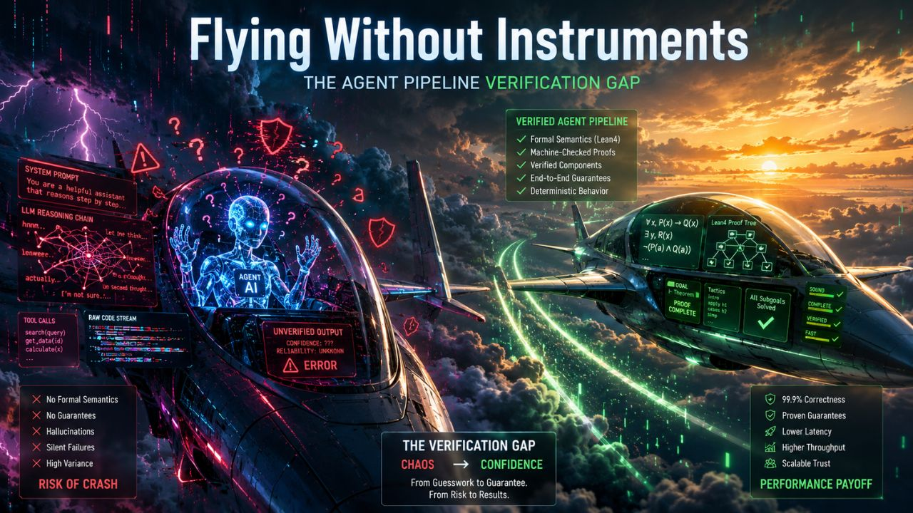

AI InfrastructureThe Verification Gap: Why Your Agent Pipeline Is Flying Without Instruments
Lean4Agent proves formal verification boosts agent workflows by 12%. The 28-point safety mirage exposes overconfident evaluations. Three papers, one wake-up call: your agent pipeline is flying without instruments.